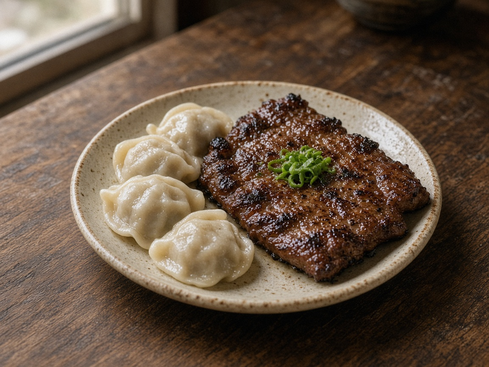

約堡華人指南 · JOBURG
简体
The Joburg Chinese Guide
他鄉的燈火，
家鄉的味道。
⌕ 搜尋商家或服務 Search…
醫療健康
Health
美容美髮
Beauty
餐飲美食
Food
超市購物
Groceries
法律簽證
Legal
財稅金融
Tax,
房屋居家
Property
教育翻譯
Education
全部服務
All
No. 01 — 精選商家
一塊炭烤雞排的故事

江味齋
JiangWay
台灣家常味。炭烤雞排與手工水餃，純外帶，承接企業外燴。
WHATSAPP
官網 ↗
No. 02 — 本週優惠
「範例：雞排＋水餃套餐」
江味齋 · 優惠內容與期限待商家確認
No. 03 — 生活資訊
簽證續簽流程整理
範例 Sample · 生活指南
停電 Load-shedding 查詢
範例 Sample · 實用工具
中文看診診所清單
範例 Sample · 醫療
廣告位 / Ad · 全幅故事版位開放刊登
設計稿 Mockup · 圖片為 AI 生成示意 · 範例資料未定稿